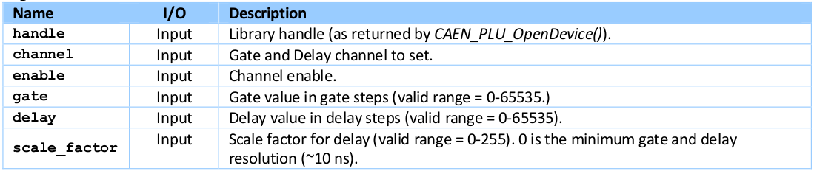
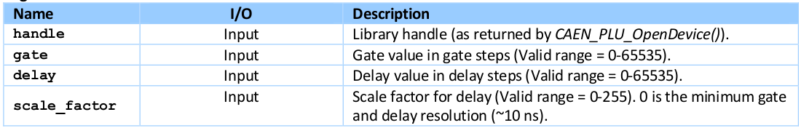
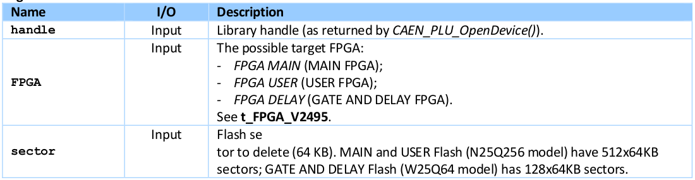

PLULib¶
PLULib Test¶
The connection parameters to correctly run the demo are:
- connection type -> the identifier of the active communication link:
0 = USB direct link
1 = Ethernet link
2 = USB-to-VME through the V1718 CAEN Bridge
3 = CONET-to-VME through the V2718 CAEN Brdige
device_serial_number -> the serial number of the target board. This parameter is meaningful only in case of USB direct link; do not add it to the command string otherwise.
ip -> the IP address of the target board. This parameter is meaningful only in case of Ethernet connection to the DT5495 board; do not add it to the command string otherwise.
b -> the VME Base Address of the target board. This parameter is meaningful only in case of connection to the V2495 board through a CAEN Bridge (V2718/V1718); do not add it to the command string otherwise.
# 很奇怪的问题，我们插件的控制需要用以下的命令
./CAENPLUTest -c 0 -sn 0025;
PLULib 支持以下方式的通讯:
PC → USB-to-miniUSB → V2495/DT5495
PC → ETH → DT5495
PC → PCI (A2818) → CONET → V2718 → VME → V2495
PC → PCIe (A3818) → CONET → V2718 → VME → V2495
PC → USB → V1718 → VME → V2495
Error Codes¶
enum CAEN_PLU_ERROR_CODE {
CAEN_PLU_OK =0,
CAEN_PLU_GENERIC =-1,
CAEN_PLU_INTERFACE =-2,
CAEN_PLU_FPGA =-3,
CAEN_PLU_TRANSFER_MAX_LENGTH =-4,
CAEN_PLU_NOTCONNECTED =-5,
CAEN_PLU_NO_DATA_AVAILABLE =-6,
CAEN_PLU_TOO_MANY_DEVICES_CONNECTED =-7,
CAEN_PLU_INVALID_HANDLE =-8,
CAEN_PLU_INVALID_HARDWARE =-9,
CAEN_PLU_INVALID_PARAMETERS = -10
};
库函数¶
OpenDevice¶
The connection with a device in your network can be established using this function. It returns a handle that can be used later to interact with the system.
CAEN_PLU_API CAEN_PLU_ERROR_CODE
CAEN_PLU_OpenDevice(t_ConnectionModes connection_mode,
char *IPAddress_or_SN_or_VMEBaseAddress,
int TCPPort_or_VMElink,
int UDPPort_or_VMEConetNode,
int *handle);
CAEN_PLU_OK (0) in case of success. Negative numbers are error codes (see Error Codes).
// Connecting to a PLU module (V2495 or DT5495) via direct USB link:
ret = CAEN_PLU_OpenDevice(CAEN_PLU_CONNECT_DIRECT_USB, "4", 0, 0, &handle);
// A connection via a Ethernet is opened with:
ret = CAEN_PLU_OpenDevice(CAEN_PLU_CONNECT_DIRECT_ETH, "192.168.7.11", 0, 0, &handle);
// V1718 access can be opened with:
ret = CAEN_PLU_OpenDevice(CAEN_PLU_CONNECT_VME_V1718, vme_base_address, 0, 0, &handle);
// V2718 bridge connection can be opened with:
ret = CAEN_PLU_OpenDevice(CAEN_PLU_CONNECT_VME_V2718, vme_base_address, 0, 0, &handle);
// In both the latter cases, a VME Base Address of the PLU module must be specified.
CloseDevice¶
This function closes the connection with the programmable logic unit. The CloseDevice function must be called before to exit the application.
CAEN_PLU_API CAEN_PLU_ERROR_CODE
CAEN_PLU_OpenDevice(int handle);
Return Values : 0: Success. Negative numbers are error codes (see Error Codes).
// Close the device with:
ret = CAEN_PLU_CloseDevice(handle);
WriteReg¶
Generic write access to a register of the device.
CAEN_PLU_API CAEN_PLU_ERROR_CODE
CAEN_PLU_WriteReg(
int handle,
uint32_t address,
uint32_t value
);
Return Values: 0: Success. Negative numbers are error codes.
ReadReg¶
Generic read access to a register of the device.
CAEN_PLU_API CAEN_PLU_ERROR_CODE
CAEN_PLU_ReadReg(int handle,
int32_t address,
int32_t *value);
Return Values: 0: Success. Negative numbers are error codes.
WriteData32¶
This function writes 32-bit data into memory.
CAEN_PLU_API CAEN_PLU_ERROR_CODE
CAEN_PLU_WriteData32(int handle,
uint32_t start_address,
uint32_t size,
uint32_t *value);
Return Values: 0: Success; Negative numbers are error codes.
WriteFIFO32¶
This function writes 32-bit data at the same address (FIFO mode).
CAEN_PLU_API CAEN_PLU_ERROR_CODE
CAEN_PLU_WriteFIFO32(int handle,
uint32_t start_address,
uint32_t size,
uint32_t *value);
Return Values: 0: Success. Negative numbers are error codes.
ReadData32¶
This function reads 32-bit data from memory.
CAEN_PLU_API CAEN_PLU_ERROR_CODE
CAEN_PLU_ReadData32(int handle,
uint32_t start_address,
uint32_t size,
uint32_t *value,
uint32_t *nw);
Return Values: 0: Success. Negative numbers are error codes.
ReadFIFO32¶
This function reads 32-bit data from the same adddress (FIFO mode).
CAEN_PLU_API CAEN_PLU_ERROR_CODE
CAEN_PLU_ReadFIFO32(int handle,
uint32_t address,
uint32_t size,
uint32_t *value,
uint32_t *nw);
Return Values: 0: Success. Negative numbers are error codes.
USBEnumerate¶
This function enumerates the boards connected via USB direct link.
CAEN_PLU_API CAEN_PLU_ERROR_CODE
CAEN_PLU_USBEnumerate(tUSBDevice *pvArg1,
uint32_t *numDevs);
Return Values: 0: Success. Negative numbers are error codes.
USBEnumerateSerialNumber¶
This function enumerates the boards connected via USB direct link and returns a Serial Number as a string.
CAEN_PLU_API CAEN_PLU_ERROR_CODE
CAEN_PLU_USBEnumerateSerialNumber(unsigned int *numDevs,
char *DeviceSNs,
uint32_t buffersize);
Return Values: 0: Success. Negative numbers are error codes.
InitGateAndDelayGenerators¶
This function performs the Gate and Delay initialization. It MUST be called prior to any Gate and Delay function call.
CAEN_PLU_API CAEN_PLU_ERROR_CODE
CAEN_PLU_InitGateAndDelayGenerators(int handle);
Return Values: 0: Success. Negative numbers are error codes.
SetGateAndDelayGenerator¶
This function enables and sets a single gate and delay generator channel.
CAEN_PLU_API CAEN_PLU_ERROR_CODE
CAEN_PLU_SetGateAndDelayGenerator(int handle,
uint32_t channel,
uint32_t enable,
uint32_t gate,
uint32_t delay,
uint32_t scale_factor);
Note: Gate+Delay parameters cannot exceed 65535.
Return Values: 0: Success. Negative numbers are error codes.
SetGateAndDelayGenerators¶
This function enables and set ALL gate and delay generators channels with a common value.
CAEN_PLU_API CAEN_PLU_ERROR_CODE
CAEN_PLU_SetGateAndDelayGenerators(int handle,
uint32_t gate,
uint32_t delay,
uint32_t scale_factor);
Note: Gate+Delay parameters cannot exceed 65535.
Return Values: 0: Success. Negative numbers are error codes.
GetGateAndDelayGenerator¶
This function gets the Gate and Delay channel parameters.
CAEN_PLU_API CAEN_PLU_ERROR_CODE
CAEN_PLU_GetGateAndDelayGenerator(int handle,
uint32_t channel,
uint32_t *gate,
uint32_t *delay,
uint32_t *scale_factor);
Return Values: 0: Success. Negative numbers are error codes.
EnableFlashAccess¶
By this function, it is possible to enable the Flash access. It MUST be called prior to any Flash access function call.
CAEN_PLU_API CAEN_PLU_ERROR_CODE
CAEN_PLU_EnableFlashAccess(int handle,
t_FPGA_V2495 FPGA);
Return Values: 0: Success. Negative numbers are error codes.
DisableFlashAccess¶
By this function, it is possible to disable the Flash access. It MUST be called prior to any flash access function call.
CAEN_PLU_API CAEN_PLU_ERROR_CODE
CAEN_PLU_DisableFlashAccess(int handle,
t_FPGA_V2495 FPGA);
Return Values: 0: Success. Negative numbers are error codes.
DeleteFlashSector¶
This function deletes a single Flash sector.
CAEN_PLU_API CAEN_PLU_ERROR_CODE
CAEN_PLU_DeleteFlashSector(int handle,
t_FPGA_V2495 FPGA,
uint32_t sector);
Note: Please, BE AWARE that some sectors are reserved for factory and user firmware. User storage area is in sectors 106-510 for MAIN Flash and sectors 458-510 for USER Flash. DELAY Flash should not be used for user data.
Return Values: 0: Success. Negative numbers are error codes.
WriteFlashData¶
This function allows to write data into the Flash.
CAEN_PLU_API CAEN_PLU_ERROR_CODE
CAEN_PLU_WriteFlashData(int handle,
t_FPGA_V2495 FPGA,
uint32_t address,
uint32_t *data,
uint32_t length);
Return Values: 0: Success. Negative numbers are error codes.
ReadFlashData¶
This function allows to read data from the Flash.
CAEN_PLU_API CAEN_PLU_ERROR_CODE
CAEN_PLU_ReadFlashData(int handle,
t_FPGA_V2495 FPGA,
uint32_t address,
uint32_t *data,
uint32_t length);
Return Values: 0: Success. Negative numbers are error codes.
GetInfo¶
This function retrieves the module information.
CAEN_PLU_API CAEN_PLU_ERROR_CODE
CAEN_PLU_GetInfo(int handle,
tBOARDInfo *HWOPTIONS;
Return Values: 0: Success. Negative numbers are error codes.
GetSerialNumber¶
This function retrieves the module serial number stored into the Configuration ROM
CAEN_PLU_API CAEN_PLU_ERROR_CODE
CAEN_PLU_GetSerialNumber(int handle,
char *sn,
uint32_t buffersize);
Return Values: 0: Success. Negative numbers are error codes.
ConnectionStatus¶
This function gets the current connection status from the unit.
CAEN_PLU_API CAEN_PLU_ERROR_CODE
CAEN_PLU_ConnectionStatus(int handle,
int *status);
Return Values: 0: Success. Negative numbers are error codes.
数据结构和类型描述¶
t_ConnectionModes¶
Enumerated type for the kind of connection link.
typedef enum
{
CAEN_PLU_CONNECT_DIRECT_USB,
CAEN_PLU_CONNECT_DIRECT_ETH,
CAEN_PLU_CONNECT_VME_V1718,
CAEN_PLU_CONNECT_VME_V2718,
} t_ConnectionModes;
t_FPGA_V2495¶
Enumerated type for the kind of V2495/DT5495 target FPGA.
typedef enum
{
FPGA_MAIN = 0,
FPGA_USER = 1,
FPGA_DELAY = 2
} t_FPGA_V2495;
tBOARDInfo¶
This structure defines the board generic information from the Configuration ROM.
typedef struct _tBOARDInfo
{
uint32_t checksum;
uint32_t checksum_length2;
uint32_t checksum_length1;
uint32_t checksum_length0;
uint32_t checksum_constant2;
uint32_t checksum_constant1;
uint32_t checksum_constant0;
uint32_t c_code;
uint32_t r_code;
uint32_t oui2;
uint32_t oui1;
uint32_t oui0;
uint32_t version;
uint32_t board2;
uint32_t board1;
uint32_t board0;
uint32_t revis3;
uint32_t revis2;
uint32_t revis1;
uint32_t revis0;
uint32_t reserved[12];
uint32_t sernum1;
uint32_t sernum0;
} tBOARDInfo;
_tUSBDevice¶
This structure defines the USB device descriptor.
typedef struct _tUSBDevice
{
uint32_t id;
char SN[64];
char DESC[64];
} tUSBDevice;